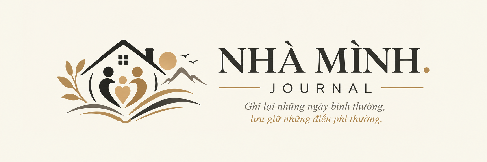
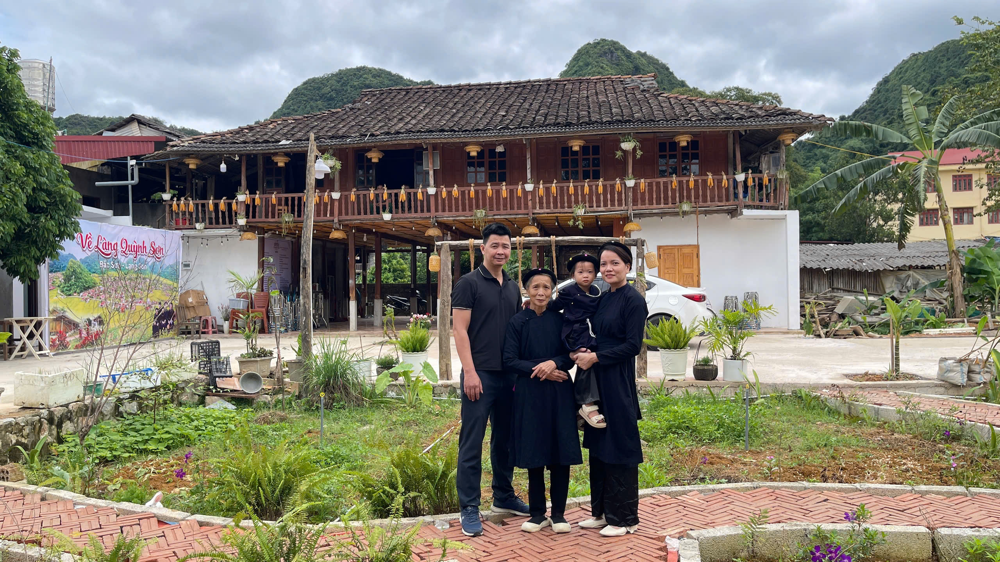

GIA ĐÌNH
Hành trình của Dâu Tây
Từ hai vạch hồng đầu tiên đến những ngày con lớn khôn — câu chuyện của Dâu Tây và Nhà Mình.
Đọc bài viết
Góc nhỏ lưu giữ những câu chuyện, trải nghiệm và khoảnh khắc đáng nhớ của gia đình.
Ghi lại những ngày bình thường, lưu giữ những điều phi thường.
NHẬT KÝ NHÀ MÌNH
Những câu chuyện và khoảnh khắc được ghi lại trên hành trình của Nhà Mình.
GIA ĐÌNH
Từ hai vạch hồng đầu tiên đến những ngày con lớn khôn — câu chuyện của Dâu Tây và Nhà Mình.
Đọc bài viết
GIA ĐÌNH
Một ngày về thăm ông bà ngoại, lưu giữ những khoảnh khắc bình dị của Dâu Tây bên gia đình thân yêu.
Đọc bài viếtNHỮNG ĐIỀU THÂN THUỘC
Những câu chuyện đời thường, kỷ niệm và khoảnh khắc đáng nhớ bên những người thân yêu.
ĐI ĐỂ KHÁM PHÁ
Ghi lại những vùng đất đã đi qua, những hành trình và trải nghiệm đáng nhớ.
HỌC TỪ CUỘC SỐNG
Những điều mới mẻ, bài học và câu chuyện nhỏ góp nhặt mỗi ngày.
CÔNG CỤ CỦA THỜI ĐẠI
Chia sẻ những ứng dụng, thiết bị và kiến thức công nghệ hữu ích trong cuộc sống.
SUY NGẪM VÀ CHIA SẺ
Những suy nghĩ, quan sát và câu chuyện được nhìn từ góc nhìn của Nhà Mình.
VỀ NHÀ MÌNH JOURNAL
Nhà Mình Journal là nơi ghi lại những câu chuyện gia đình, hành trình khám phá, trải nghiệm và những điều thú vị trong cuộc sống thường ngày.